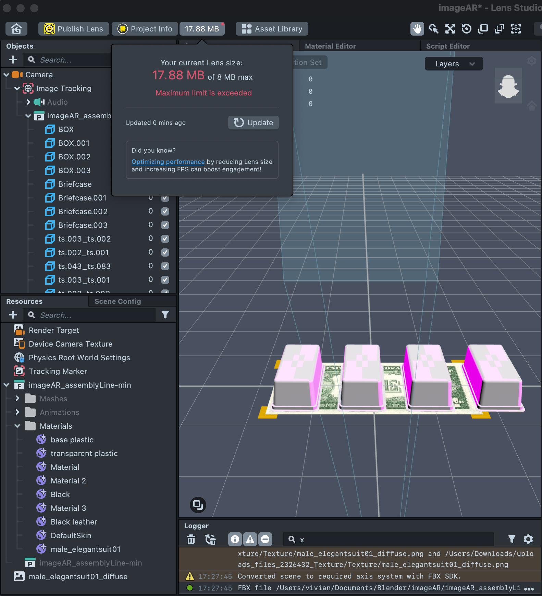
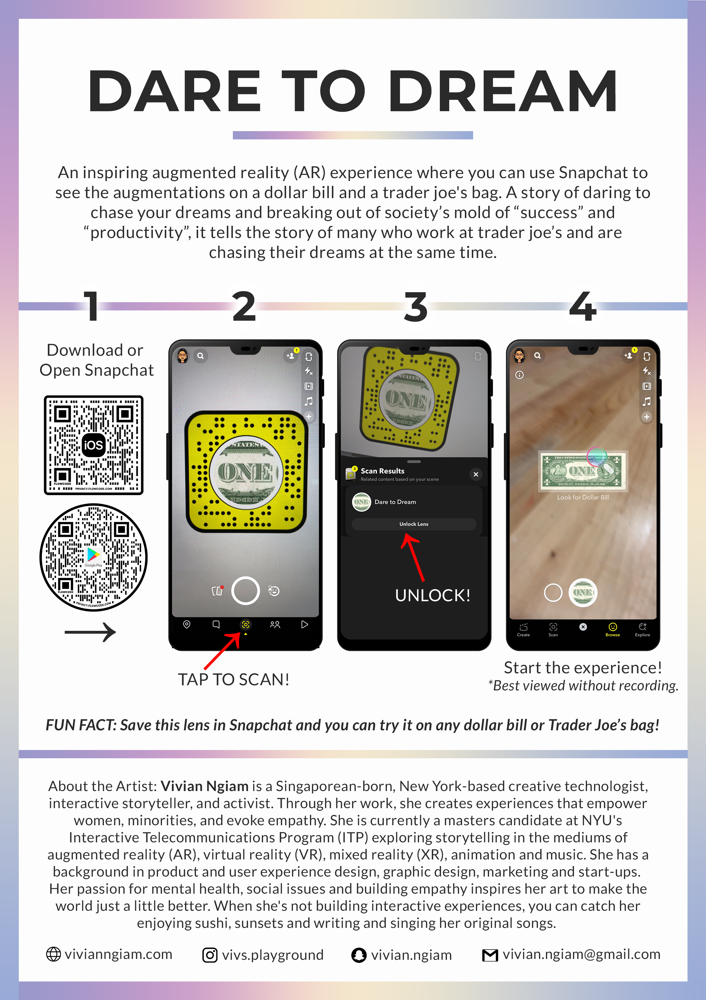

Creative Director | Lead Designer & Developer | ARtist
2 weeks
Dare to Dream is an inspiring augmented reality (AR) short story that lives on any dollar bill and Trader Joe's grocery paper bag. A story of daring to chase your dreams and breaking out of society’s mold of “success” and “productivity”, it tells the story of many who work at Trader Joe’s and are chasing their dreams at the same time
CONTEXT
I was tasked to tell a meaningful story across AR image targets. This piece was exhibited at Willoughby Walks and Strawberry Festival, which are exhibitions with large foot traffic to the public. Interaction design was designed differently for each exhibition, taking into account the differences in venue, space and manpower.
CONCEPT
Reason for choice of image targets: I wanted to use something accessible so that people can experience it in the comfort of their home using what they already have.
The narrative: Using a dollar bill and a trader joe’s bag, I wanted to tell a story of daring to chase your dreams and breaking out of society’s mold of “success” and “productivity”. In the dollar bill, I wanted to create a 3D animation of a factory production/ assembly line of humans in the corporate world. When panning to the trader joe’s bag, it will reveal a 2D animation of a creative, less traditional and often looked upon as an “undesirable” job because of the lack of stability or “prospects” to make money——e.g. musician. This tells the story of many who work at Trader Joe’s and are chasing their dreams, inspired by the stories of real people.
ITERATION 1
I created a factory production/ assembly line 3D animation in blender:
I wanted to first test how the whole thing works when exported into lens studio before spending more time making animations. However, when exported into Lens Studio, it messed up the lighting settings and models and I ended up with this:
I did play around with the model and some settings and realized I could take the dollar bill plane away to make it look more realistic and not break the illusion. I would thus need to find another way to “hide” the 1st mannequin that sinks into the dollar bill. I also didn’t particularly like the aesthetic and how it looked after exported into Lens Studio so I will be re-doing the animations in iteration 2.
I created a more polished factory production/ assembly line 3D animation in blender:
Material preview of animation
Rendered still image of animation
However, I had a lot of issues trying to export it properly into Lens Studio. Firstly, the size was too big. Secondly, the materials kept portraying the pink shader, and it was challenging to import the materials properly from Blender.

Unfortunately, I was unable to solve the issues despite trying various ways such as decimating the 3D object to make the size smaller and embedding the materials into the object.
I decided to pivot and animate directly in Lens Studio as it would save a lot of space. Using Mixamo, I was able to animate my human model already modelled in the previous iteration and coded in the animations in Lens Studio. Additionally, I found another creative way to make the dollar note open and have a 3D effect where the "corporate zombies" were trapped in the note. I tested this effect with users and also showed them my previous iterations after and they enjoyed this effect the most as it had the unexpected reveal that was a lot more impactful. structions worked well within the story and people were able to navigate with the visual cues (the magnifying glass) and text instructions to move from the first image target to the next.
Interaction design challenge for Willoughby Walks: As this piece was being exhibited at 3 different exhibitions, interaction design was very important here. For the Willoughby Walks exhibition, there was no one manning the booth. Hence, I had to make it as easy as possible to interact with the piece. I separated the image targets into 2 stations and made sure their placements were clearly labelled. I also made an instructional card with images for people to refer to. Without any guidance from me, I tested this with people and the instructions were clear enough for folks to go through the piece without much trouble.
Willoughby Walks exhibition: Dare to Dream layout

Willoughby Walks exhibition: Dare to Dream poster with instructions
Dare to Dream exhibition interactions
Open Snapchat and scan the code to try it out on a dollar bill and Trader Joe's paper bag!